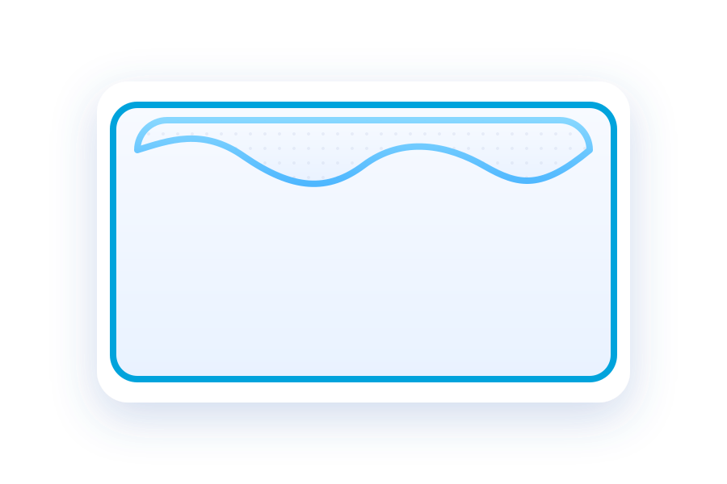

Now showing
Pillow comfort demo
Tap any mini scene to spotlight it
Optimized for vertical stories — soft colors, big touch targets, and smooth zooms.
Comfort is Always with you

How to drop your 20 poses
- Use the Load pillow image button above to pick the exact pillow photo you provided. It swaps instantly into the center.
- Click Load 20 poses, select your twenty pose files at once (JPG/PNG/SVG). They load in filename order into the clock, glide to center for ~1s, hold for ~1s, then return — all within a 30s full loop.
- If you prefer pre-wiring assets, drop them into
assets/poses/pose-01.ext…pose-20.extand your pillow intoassets/pillow-center.ext; reload the page. - Toggle auto-play with the checkbox to pause/resume the sequence; Reset clears focus and stops the loop.